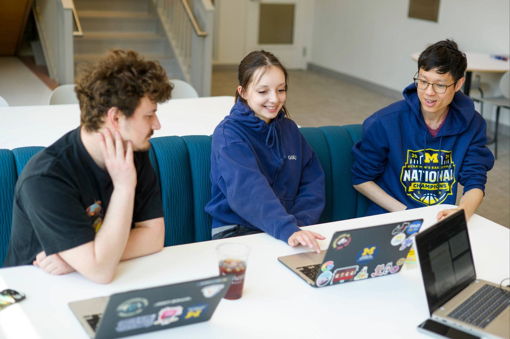
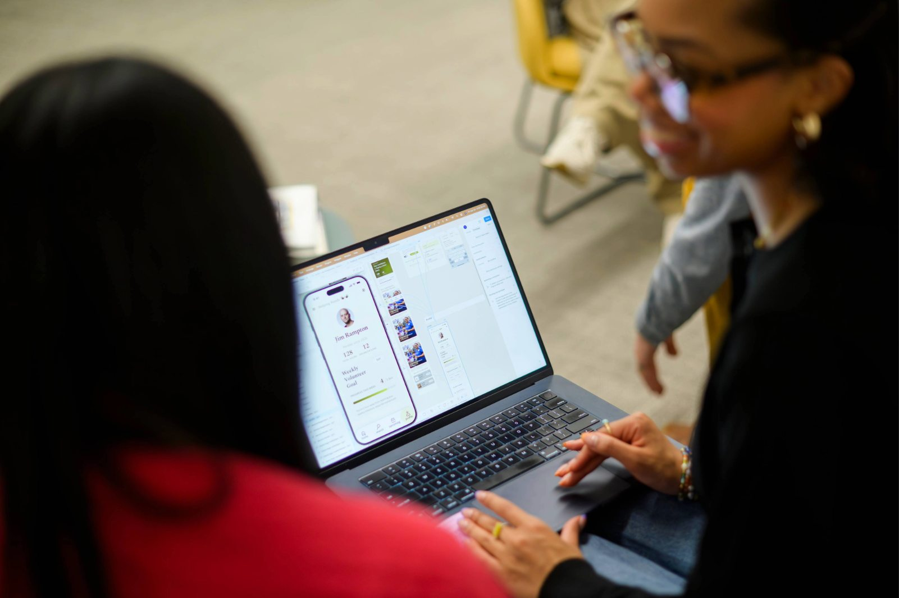

Ending the Experience (Responsible Offboarding & Handoff)

Value & Narrative
Responsible offboarding is an ethical mandate in engaged learning. Delivering high-quality technical assets
is only half the job—ensuring the community partner or client can independently maintain, update, and
benefit
from your work long after the semester ends is what defines a successful project.
Focus & Objectives
Completing & Transitioning Work: Package code, design files, reports, and technical
assets into accessible, usable formats for your partner.
Closing Relationships Appropriately: Formally conclude the project with gratitude,
clarity, and clear future boundaries.
Evaluating Impact: Measure project outcomes against initial scoping goals and gather
client feedback.
After the Experience (Career Integration & Portfolios)

Value & Narrative
Employers do not just hire technical skills—they hire people who can solve unscripted problems, collaborate
in diverse teams, and deliver results under realistic constraints. This track guides you in bridging the gap
between your academic work and your professional brand, helping you articulate the full narrative of your
growth.
Focus & Objectives
Articulating Skills: Translate unscripted, complex project work into compelling resume
bullets and interview responses.
Portfolio Integration: Document your process, artifacts, key decisions, and measurable
outcomes.
Maintaining Networks: Keep professional touchpoints open with mentors, community
partners,
and teammates.